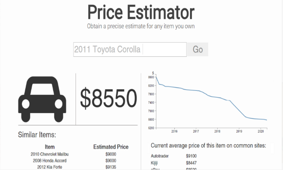
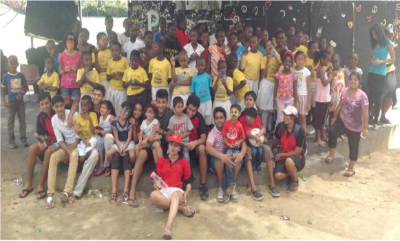
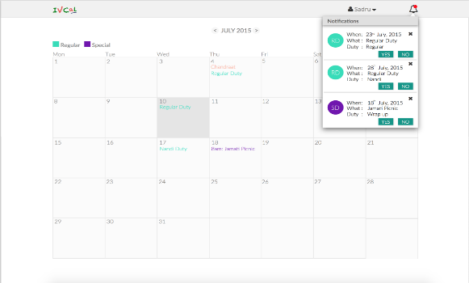
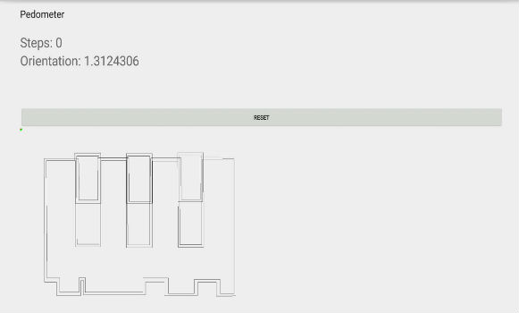
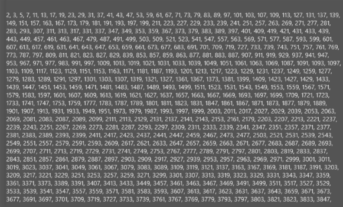

-
SpeakBack
SpeakBack is a speech analyzer I developed using Ruby on Rails. It is a web application which records speech and returns a phoetic analysis, along with speech recognition, of the recorded speech
Details
-

Price Estimator
Price Estimator is a web application that estimates the prices of used products based on data collected from e-shopping servers regarding similar products. This application was made using Ruby on Rails. with the front-end developed using HTML5, CSS, Javascript, jQuery and Bootstrap. This application was developed by a team of three developers.
-

UHAI Mombasa
UHAI is a community service group, that I co-founded, which aims to improve the quality of life of the people living in the rural areas of Kenya. UHAI's greatest achievement was providing Pungu Primary School with access to clean water, which was a commodity the school had been lacking. UHAI also held entertainment events for children in orphanages, along with other fundraising activities to give back to the community.
Visit Uhai Uhai in the news! -

IVCCal UI Design
IVCCal is an application developed to schedule volunteering duties at my local community center. I developed the user interface for IVCCal, which primarily included an interactive calendar, using Groovy on Grails along with HTML 5, CSS, jQuery, Javascript and Bootstrap.
-

Fit & Focused
Fit & Focused is an Android application that includes a pedometer which keeps count of one's steps, and a path finding application which helps the user get from one spot to another in a building, with live directions. This application uses an Android device's sensors to collect its information. The application was developed in Eclipse with Java.
-

Find the Number
Find the Number is a program I developed in C# in order to look for a number in a file. It was one of the initial programs I developed using an OOP language. The program uses I/O Streams to read and write a file which has numbers stored. It also allows the user to search for a number in the file.
View on GitHub